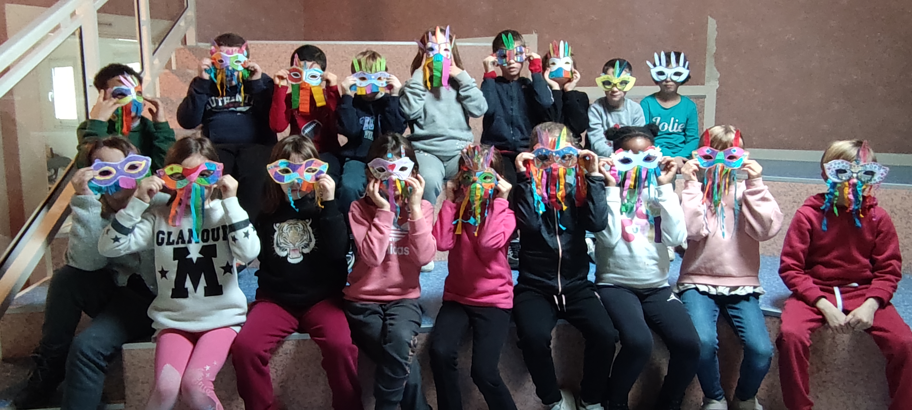

Lundi 24 février
Aujourd'hui, c'est la rentrée !
ce jour de rentrée, les élèves de la classe 3 ont eu une drôle de surprise : il y a un nouvel élève !
En fait, l'ensemble de la classe 3 a eu la joie d'accueillir parmi eux un nouvel élève suite à un déménagement.
Cet événement n'a pas manqué de rendre les élèves très enthousiastes à l'idée de se faire un nouvel ami.
Nous souhaitons une bonne intégration à notre nouvel arrivant et espérons que vous continuerez à suivre les aventures de nos chers élèves.
Mardi 25 février
Aujourd’hui c’est Escrime !
Les élève de Mme Foucher, Mr Champigny, Mr Meignan et Mme Roque-Picard vont avoir un court d’escrime avec un intervenant.
L’escrime est un sport de combat. Il s’agit de l’art de toucher un adversaire avec la pointe. L'escrime est l'un des sports où le français est la langue officielle.
Chaque pays utilise sa langue pour les compétitions nationales, mais le français est obligatoire pour l’arbitrage dans les compétitions internationales.
Les élèves auront donc cours d’escrime tous les mardis entre 13h30 et 16h30 encadré par deux intervenants de l’USEP ainsi que par leur professeure .

Jeudi 27 février
Aujourd’hui on va voir les masques de la classe 5 !
Dans le cadre du thème de l’année (le voyage) ils ont lu l’histoire : Le loup qui voulait faire le tour du monde.
Voici donc le résumé qu’ils nous en ont fait :
Nous avons lu l’’histoire :Le loup qui voulaient faire le tour du monde
Avec Loup nous avons voyagé à Rio et à Venise. Puis, nous avons regardé un documentaire sur le carnaval de Rio et de Venise.
Alors, nous avons fabriqué nos propres masques de carnaval multicolore.
Voici donc leur réalisation.
